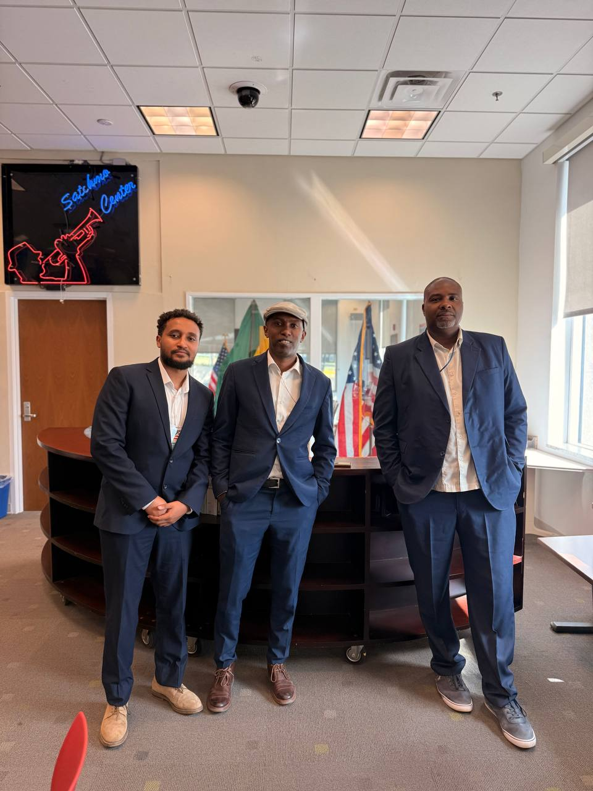
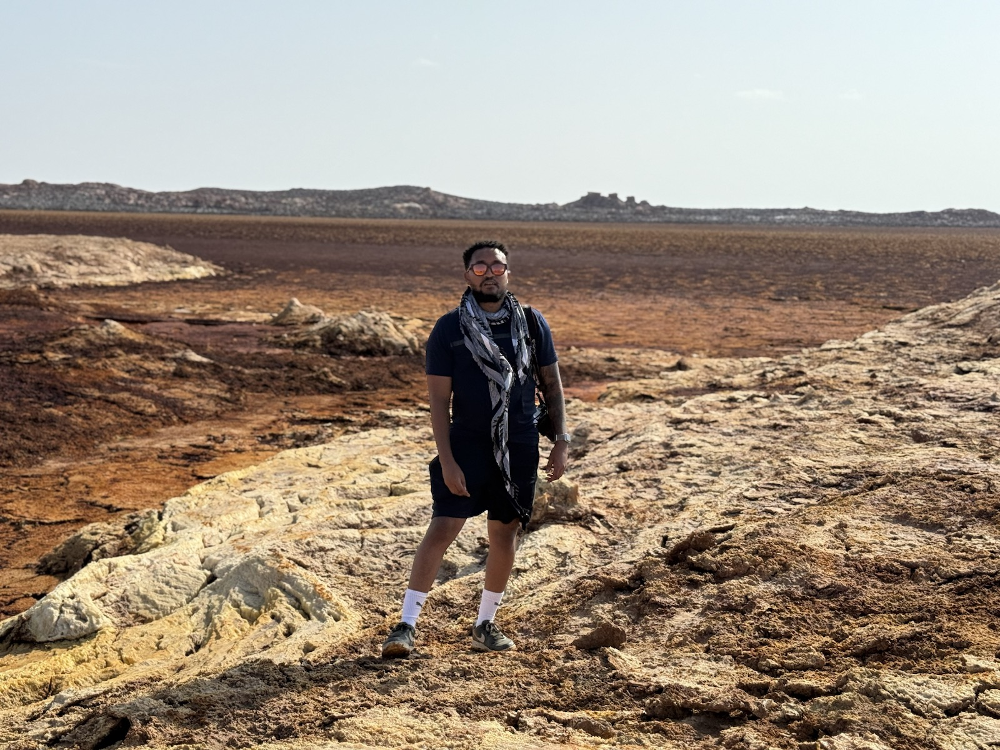
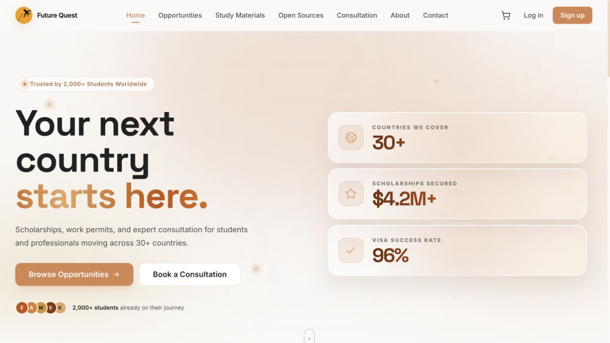
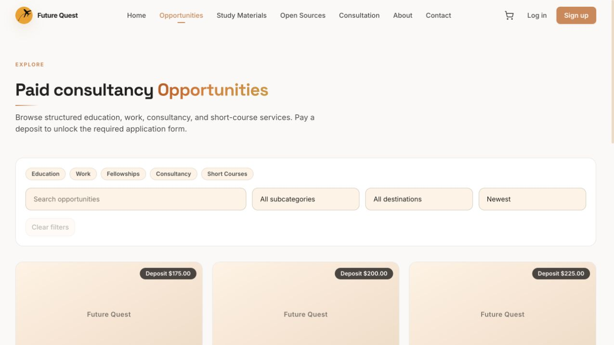
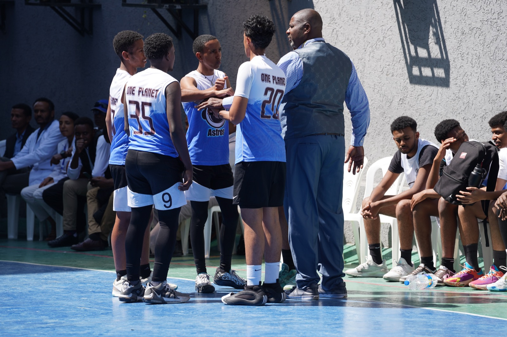
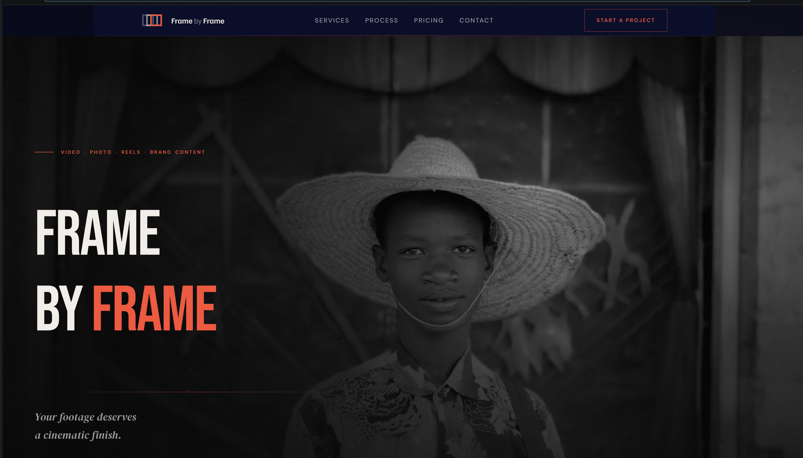

Years of cross functional delivery
Addis Ababa · Open to project and media roles
I lead complex work and shape the story.
Dawit Feleke · Project Manager & Media Producer
I manage projects and productions from the first brief through final delivery, aligning people, logistics, story, filming, editing, and audience growth.
01 / Project manager
02 / Media producer
03 / Filmmaker
Scroll to explore
Portfolio / 2026
TikTok likes after active EthioBallers management
EthioBallers followers reached in about one month
Documentary presented at the U.S. Embassy
Major Pinnacle AI client projects
Students placed internationally
01 / Media & production
Stories built with production discipline.
Documentary, short film, branded content, and social growth work spanning story development, production planning, filming, editing, and distribution.

Documentary
18 minutes
01
20 Years of Excellence
Youth development through basketball, produced for a room of international sport leaders.
- Role
- Owned the production end to end, covering story development, planning, filming, sound, editing, and final delivery.
- Partners
- Developed through work involving the Ethiopian Basketball Federation and FIBA.
- Presentation
- The completed 18 minute documentary was presented at the U.S. Embassy in Addis Ababa to NBA Africa representatives.
02
From written idea to final cut.
Building visual stories around music, identity, creative process, and personal growth.
- Credits
- Owned one production end to end and contributed production, filming, and editing across three additional releases written by Bana Records artist Ebenehakim.
- Stories
- Beyond the Beat: The Bana Records Music Camp, Behind the Mountain, Studio Confessions, and Empty Pages.
- Craft
- Developed two stories for production, built visual plans and shot structures, filmed on Sony FX3, and edited in DaVinci Resolve.
Behind the frame
Story and shot planning

Event organization
Production team lead
03
AFAR
A remote location production built through story, logistics, and hands on filmmaking.
- Credit
- Event Organizer and Video Production Team Head.
- Delivery
- Led story development, travel logistics with Michael Feleke, filming, sound, editing, and color.
- Collaboration
- Worked with travel creator and Visit Oromia ambassador Michael Feleke. Seven videos produced together became notable performers across his social channels.
Social growth / 2025 to early 2026
EthioBallers
Returned to the Carlos Thornton organization to lead TikTok content strategy, filming, editing, page management, and analytics with a three person team spanning editing, creative direction, and digital marketing.
Visit EthioBallers20+Starting followers
6K+Followers in about one month
50K+TikTok likes after active management
3Creative team members coordinated
02 / Projects & programs
Systems, programs and teams, made real.
Project management across digital products, business operations, institutional partnerships, youth programs, and technology delivery.
01
Headway
Building a profitable service business around reliable delivery.
- Context
- Concurrent student applications, visa processing, and preparation before departure across 3–6 month delivery windows.
- Approach
- Google Workspace KPI dashboards and Agile sprint planning for peak intake seasons.
- Outcome
- 100+ students placed, 20+ repeat institutional clients, profitable from year one, and a team scaled from one to seven.
02
Future Quest
Turning an office based student service into a platform people can use from anywhere.
- Context
- Students needed a simpler way to discover suitable scholarships, education pathways, and work opportunities without travelling to the Headway office.
- Role
- Led the product project with the Headway team from early development in 2022 through platform deployment in 2024.
- Product
- A searchable platform for opportunities, destination filters, remote application flows, study materials, consultations, and free resources.
- Outcome
- Launched in 2024 and has remained active since, expanding how students can access Headway services remotely.


Development began / 2022
Platform launched / 2024

200+ athletes / event
20 coaches
03
Programs that moved.
Aligning funders, partners, coaches and athletes around one delivery plan.
- Challenge
- Simultaneous partner expectations across branding, funding, event logistics, and youth program delivery.
- Approach
- Structured project tracking in Notion and Trello, rolling sprint cycles, and complete program design.
- Outcome
- Five institutional partnerships, full program funding, fully booked camps, and zero missed program deadlines.
04
Three client tracks.
Maintaining delivery focus across demanding client work during an intensive period of overlapping responsibility.
- Context
- Pinnacle AI brings development, design, and business consulting together in one delivery team.
- Portfolio
- Worked across three major client projects for RIDE, beU Delivery, and Solar 23.
- Role
- Supported project execution across three concurrent client engagements, balancing priorities, timelines, and cross functional coordination.
- Outcome
- Contributed to effective client delivery and improved commercial returns during a demanding period of overlapping responsibility.
Also built / 2026
Frame by Frame
Designed and deployed a full company website for a media production company, end to end from build through launch. Sustained an average of 40–80 visits per month after launch, with client feedback specifically praising ease of navigation and usability.

03 / Profile
I work where delivery and storytelling meet, building the system, guiding the people, and shaping what the audience finally sees.
Project Manager and Media Producer with 4+ years leading cross functional programs and hands on productions across technology, education, sports, music, and documentary work.
My media work spans story development, production planning, Sony FX3 shooting, sound, editing, color, and distribution in DaVinci Resolve. Selected work includes 20 Years of Excellence, AFAR, and four Bana Records productions.
I have also led the Future Quest product from development to launch, managed client delivery at Pinnacle AI, built Headway Travel Firm, and helped EthioBallers reach 6K+ followers and 50K+ TikTok likes after taking an active role in the page.
Comfortable owning the full chain from scope, budget, schedule, and stakeholder alignment through filming, editing, publishing, and final handoff. Native Amharic, C2 English.
Start with clarity
Translate ambiguous briefs into scope, owners, milestones, and a shared definition of done.
Make work visible
Build simple systems that surface progress, risk, and blockers early.
Align the room
Keep partners, teams, and decision makers moving toward the same outcome.
Own the last mile
Stay with the work through execution, handoff, and close.
Adapt without losing control
Use Agile and Kanban practices to respond to reality while protecting the outcome.
04 / Experience
A career built through ownership.
Seven chapters across technology, entrepreneurship, media production, sports, and international community work.
Technology project delivery
Project management role
01 / 07
Project Manager
Pinnacle AI
Three major client projects managed during an intensive period of overlapping responsibility.
- Contributed to delivery across major client projects for RIDE, beU Delivery, and Solar 23.
- Supported execution across concurrent engagements within an integrated development, design, and consulting environment.
- Balanced priorities across three concurrent client projects through disciplined planning and delivery focus.
- Contributed to improved commercial returns through effective project execution during a demanding period of overlapping responsibility.
2025 – Early 2026
Addis Ababa, Ethiopia
02 / 07
Media Producer & TikTok Content Lead
Coach Carlos / EthioBallers
6K+ followers and 50K+ likes reached in about one month of active page management and production.
- Returned to the Carlos Thornton organization to lead TikTok content strategy, filming, editing, page management, and analytics.
- Produced a consistent stream of basketball content built around coaches, athletes, training, and youth development.
- Coordinated a three person creative team spanning editing, creative direction, and digital marketing.
- Helped grow the account from just over 20 followers to more than 6,000, while passing 50,000 TikTok likes.
2023 – 2024
Addis Ababa, Ethiopia
03 / 07
Head of Content & Communications
Bana Records
A repeatable release system in place of rushed production.
- Rebuilt the label's content pipeline, introducing Kanban workflows and release schedules that eliminated rushed production and grew international streaming reach.
- Directed a cross functional creative team of 3 across concurrent release cycles, setting up quality gates and approval workflows that reduced revision cycles.
- Owned all content OKRs, including stream targets, release frequency, and audience growth, moving output from unplanned drops to a consistent release cadence.
2022 – 2024
Headway Travel Firm digital product
04 / 07
Product Project Lead
Future Quest
A remote opportunity platform taken from early development to launch.
- Started developing the platform with the Headway team in 2022 to make services accessible without requiring students to visit the office.
- Led delivery toward a 2024 launch, aligning the platform with real student discovery, consultation, and application workflows.
- Helped shape a product covering searchable opportunities, destination filters, application flows, study materials, consultations, and open resources.
- Deployed the platform in 2024, and it has remained active since launch.
2022 – 2023
Addis Ababa, Ethiopia
05 / 07
Special Project Manager
Carlos Thornten Sports Enrichment Center
Five funded partnerships and fully booked camps with zero missed deadlines.
- Negotiated and closed 5 institutional partnerships with schools, embassies, and NBA Africa, securing full program funding and delivering fully booked training camps for 200+ youth athletes.
- Led cross functional stakeholder management across all active partners simultaneously, aligning branding, event logistics, and delivery on rolling sprint cycles with zero missed program deadlines.
- Designed complete programs from proposal writing to final execution, coordinating 200 athletes and 20 coaches per event through structured project tracking in Notion and Trello.
- Directed all external communications and content production, building the academy into a trusted international youth sports partner in Addis Ababa.
Jul 2021 – Present
Addis Ababa, Ethiopia
06 / 07
Founder & Managing Director
Headway Travel Firm
A profitable consultancy built from zero, then scaled to a team of seven.
- Built a profitable education consultancy from zero, placing 100+ students across 20+ repeat institutional clients, profitable from year one with zero external investment.
- Managed complete project delivery across visa processing, application timelines, and preparation before departure, handling concurrent active cases within a 3–6 month delivery window per student.
- Defined and tracked client KPIs, including admission rates, processing timelines, and satisfaction scores, via Google Workspace dashboards to ensure timely milestone completion.
- Scaled from solo founder to a team of 7 by implementing Agile sprint planning to manage peak intake seasons and eliminate bottlenecks.
2019 – 2021
Bydgoszcz, Poland
07 / 07
Group Leader & Project Coordinator
Wyzsza Szkola Gospodarki
Eight people, six countries, and no shared native language.
- Led a cross cultural team of 8 people from 6 countries through a community health outreach program, planning workshops, coordinating with local clinics, and delivering public health education with no shared native language.
- Developed backward planning and scope control instincts under real operational pressure that now underpin every project run since.
05 / Multidisciplinary toolkit
Enough range to move the whole system.
Project systems and hands on production craft, from the planning room to the camera, edit, launch, and final delivery.
Delivery & programs
Plan it. Align it. Ship it.
Agile
Kanban
Sprint planning
OKR/KPI tracking
Stakeholder management
Risk mitigation
Product delivery
Media production
Build the story.
Story development
Production planning
Sony FX3
Cinematography
Sound
DaVinci Resolve
Editing
Color
Partnerships & communications
Bring different interests into one plan.
Tools & digital execution
From workspace to website.
Notion
Trello
Slack
Google Workspace
Dropbox
Microsoft Office
Website design & deployment
Remote service platforms
TikTok
Instagram
Content analytics
Languages & culture
Native
Amharic
C2
English
06 / Field notes
The work also happens outside the boardroom.
Documentary, music, sports, international programs, and the visual practice that keeps observation at the center of how I work.
Drag or use the arrows to explore
07 / Start a conversation
Complex project or production?
Bring it here.
I’m open to project management, creative production, video production, filmmaking, editing, and content roles where ownership matters.
Location
Addis Ababa, Ethiopia
⌖